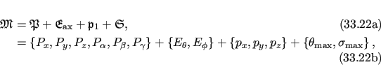

Next: Isotropic cone equations Up: Isotropic cone frame order Previous: Isotropic cone frame order Contents Index
In this model, the tilt component of the tilt and torsion angle system is modelled simply as
| θ≤θmax. | (16.21) |
The torsion angle restriction of 12.76 on page ![[*]](crossref.png) is used for the modelling of the torsion component.
A uniform distribution of rigid body positions within these bounds is assumed.
is used for the modelling of the torsion component.
A uniform distribution of rigid body positions within these bounds is assumed.
The isotropic cone model of the ball and socket joint consists of a single pivot point, a single unit z-vector of the motional eigenframe defining the cone axis, and the maximum cone opening and torsion half-angles. Including the average domain position, the parameter set is therefore
|  |
where Pi are the average domain position translations and rotations, Ei are the spherical angles defining the cone axis, pi are the coordinates of the pivot point, and θmax and σmax are the maximum cone opening and torsion half-angles respectively.